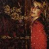

Celtic Lyrics Corner > Artists & Groups > Ashley Davis > Closer To You > Only In My Mind
|  | Only In My Mind |
| Credits : | Ashley Davis, Gawain Mathews & Keiko "Mocha" Ishibashi |
| Appears On : | Closer To You |
| Language : | English |
Lyrics :
These thoughts I have of you
Live inside a memory of truth
Like the trees that long to touch the sky
You are only in my mind
I spread these thoughts on the water
In hopes they might offer
Some release from these binds
'Cause you are only in my mind
Chorus
:
But I would leave in the morning
Petals on your pillow
A tender promise of where I'll be
The road on the river
In a dress made of moonlight
That is where I'll be
Some things you don't say
They just chase me through my day
And follow me through the night
'Cause you are only in my mind
(Chorus)
But I am waiting
I am falling
Oh into you
Oh I am dragging
I am pulling
You in me
(Chorus)